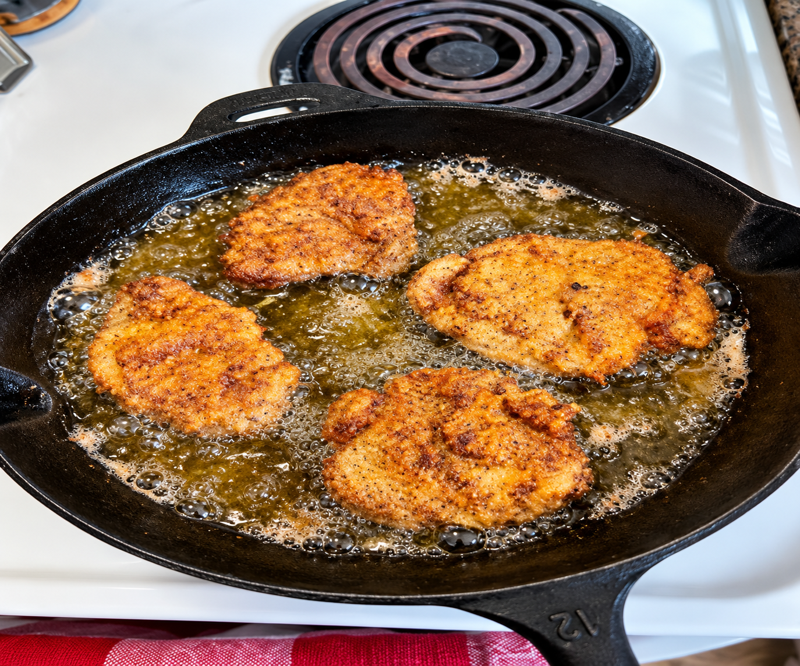

Chicken Fried Venison Steaks

Chicken fried venison is a Southern classic. Tenderized venison is breaded and fried to a crispy golden crust, then topped with rich, creamy gravy.
Ingredients
For the Venison
- 4 venison steaks, about 1/2 inch thick, tenderized
- 1 cup buttermilk
- 1 tsp hot sauce (optional)
- 1 1/2 cups all-purpose flour
- 1 tsp salt
- 1 tsp black pepper
- 1 tsp garlic powder
- 1 tsp onion powder
- 1/2 tsp paprika
- 1/2 tsp cayenne pepper (optional)
- Oil or lard for frying
For the Gravy
- 2 tbsp butter
- 2 tbsp all-purpose flour
- 2 cups milk
- Salt and pepper to taste
Instructions
- If needed, tenderize the venison steaks to about 1/2 inch thick using a meat mallet.
- In a bowl, mix buttermilk and hot sauce. Add steaks and marinate for at least 30 minutes, or overnight for extra tenderness.
- In another bowl, mix flour, salt, pepper, garlic powder, onion powder, paprika, and cayenne.
- Remove steaks from marinade and let excess drip off. Coat each steak in the flour mixture, pressing firmly to make it stick.
- Heat about 1/4 inch of oil in a skillet over medium-high heat to around 350°F.
- Fry steaks for about 3–4 minutes per side until golden brown and crispy. Check that the venison reaches 145°F internally and allow it to rest for 3 minutes.
- Remove steaks and drain on paper towels.
Make the Gravy
- In the same skillet, leave a small amount of drippings and reduce heat to medium.
- Add butter and melt, then stir in flour to form a roux. Cook for about 1 minute.
- Slowly whisk in milk and cook until thickened, about 3–5 minutes.
- Season with salt and pepper to taste.
Serve
Serve the venison steaks hot, topped with creamy gravy. Pair with mashed potatoes, green beans, or cornbread.
Cooking Tips
- Marinating in buttermilk helps tenderize the venison and mellow its flavor.
- Don't overcrowd the skillet. Fry in batches if needed.
- Keep the oil temperature steady for the crispiest crust.